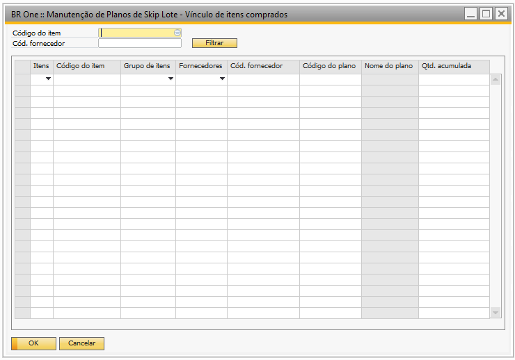
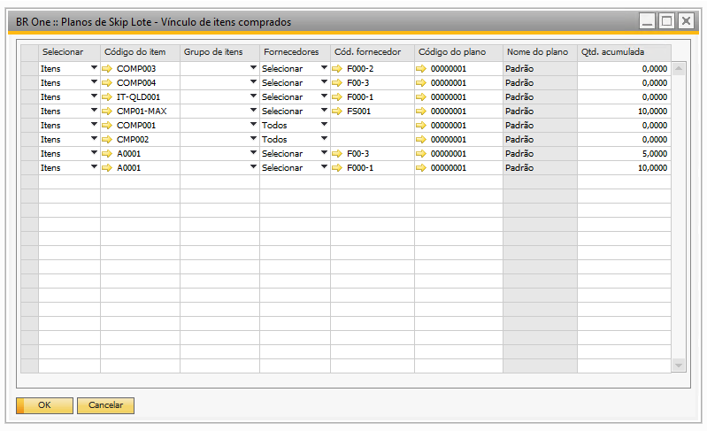
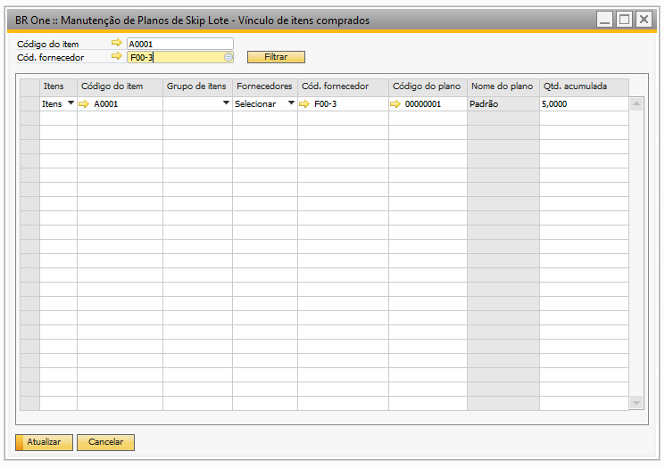
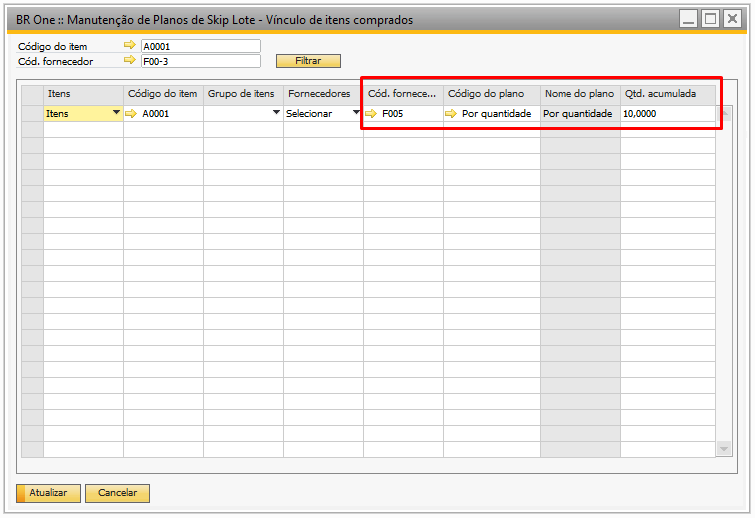
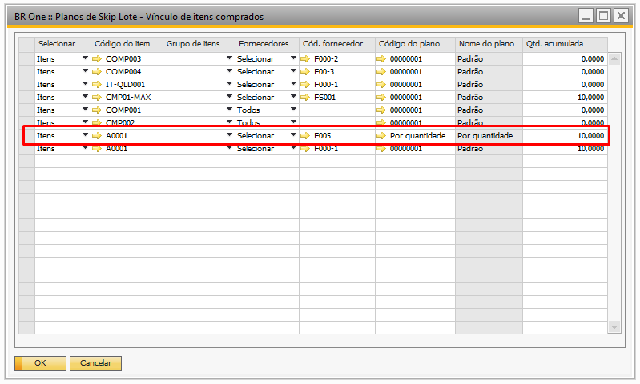
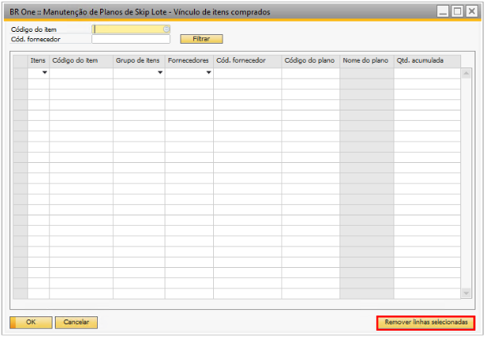

Manutenção de Planos de Skip Lote - Vínculo de itens comprados
A tela de ‘Manutenção de Planos de Skip Lote - Vínculo de itens comprados’, permite que o usuário realize atualizações nos campos de configuração da tela de ‘Planos de Skip Lote - Vínculo de itens comprados’. Ela pode ser acessada através do caminho:
Menu principal -> Qualidade -> Manutenção de Planos de Skip Lote - Vínculo de itens comprados
{kind=link}
Para utilizar a tela de manutenção o usuário deve realizar um filtro utilizando o ‘Código do item’ e/ou ‘Cód fornecedor’, após retorno do filtro é possível atualizar todos os campos existentes.
Itens:
Neste campo é retornado a informação do campo ‘Selecionar’, que pode ser ‘Itens’ e ‘Grupo de itens’ ou ‘Todos os itens’
Código do item:
Neste campo é retornado a informação do campo ‘Código do item’, que indica o item de compra configurado para o plano de skip lote.
Grupo do item:
Neste campo é retornado a informação do campo ‘Grupo do item’, que indica o grupo de item de compra configurado para o plano de skip lote.
Fornecedores:
Neste campo é retornado a informação do campo ‘Fornecedores’, e pode ser as opções ‘Selecionar’ ou ‘Todos’.
Cód. Fornecedor:
Neste campo é retornado o fornecedor configurado para o plano de skip lote.
Código do plano:
Neste campo é retornado o código do skip lote configurado para o item de compra.
Nome do plano:
Neste campo é retornado o nome do skip lote configurado para o item de compra.
Qtde. acumulada:
Neste campo é retornado a quantidade acumulada para o item de compra selecionado.
Com exceção do campo ‘Nome do plano’ que é preenchido conforme código do plano selecionado, todos os demais campos são atualizaveis, com isso a tela de ‘Manutenção de Planos de Skip Lote - Vínculo de itens comprados’, permite que o usuário realize o filtro apenas do item desejado e atualize as informações que deseja.
No exemplo abaixo, temos o item A0001 configurado na tela de ‘Planos de Skip Lote - Vínculo de itens comprados’.
{kind=link}
Ao utilizar a tela ‘Manutenção de Planos de Skip Lote - Vínculo de itens comprados’, e filtrar pelo ‘Código do item’ igual A0001 e ‘Cód fornecedor’ igual a F00-3, o filtro é retornado conforme abaixo:
{kind=link}
Portanto, agora é possível realizar a manutenção das informações desejadas para o item, em nosso exemplo, será alterado conforme destacado na imagem abaixo, os campos ‘Cód. fornecedor’, ‘Código do plano’ e a ‘Qtd. acumulada’
{kind=link}
Após clicar no botão ‘Atualizar’, essas informações serão atualizadas e passarão a ser exibidas na tela de ‘Planos de Skip Lote - Vínculo de itens comprados’.
{kind=link}
Exclusão de Linha na Tela BR One : Manutenção de Planos de Skip Lote - Vínculo de Itens Comprados
Esta opção propõe a adição de uma funcionalidade para excluir linhas na tela “BR One :: Manutenção de Planos de Skip Lote - Vínculo de itens comprados”. Isso permitirá aos usuários gerenciar eficientemente os itens vinculados, permitindo a exclusão de múltiplos itens de uma só vez.
{kind=link}
Seleção de Itens: Os usuários poderão selecionar uma ou mais linhas que desejam excluir clicando na linha que deseja. Isso permitirá a exclusão de vários itens de uma vez, melhorando a eficiência do processo.
{kind=link}